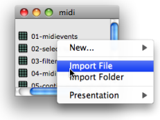
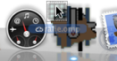
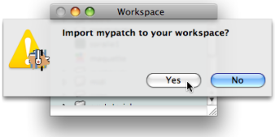
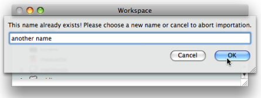
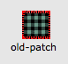
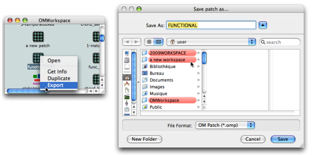
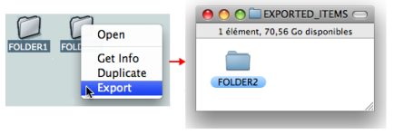

OpenMusic DocumentationHiérarchie de section : OM 6.6 User Manual > The OM Environment > Workspace > Import / Export
OpenMusic DocumentationHiérarchie de section : OM 6.6 User Manual > The OM Environment > Workspace > Import / Export
Navigation : page précédente | page suivante
Attention, votre navigateur ne supporte pas le javascript ou celui-ci à été désactivé. Certaines fonctionnalités de ce guide sont restreintes.
Import / Export
This section shows how to bring material to or from a workspace during a session via the "import" and "export" commands . These commands also allow to share material between workspaces, as a sole workspace can be open per session.
Implicit copies of files and folders are generated and can be modified independently from the master item. Genuine items aren't affected by modifications of an imported file.
Import
With the "Import" command
The user can import a file or a folder from any location in the computer to the open window of the workspace , or to that of an open sub folder . To import a file or folder :
|

Importing a file to the Midi folder of the OMWorkspace using the contextual menu.
|
Additional Import Procedures

|
|
In the import dialogue window, choose Yes to import the item, which will be copied in the current workspace.

OM systematically asks if the user wants to import the item concerned.
Existing Item / Name

If an item of the targeted directory has the same name as the item you want to import, you will be offered to rename it.
Earlier Files Compatibility
When loading an old workspace, or importing old patches or maquettes, OM may check their contents and report possible errors. Illegible files will not be imported to the workspace.

|
Earlier readable files (generally from OM 4 or earlier versions) show a red background until they are updated by OM at opening. Consider keeping originals of the files, since the updated ones will not be legible anymore by former versions. |
Export
Export Procedure
The only way to export or copy OM files and folders directly from the workspace to the finder is to use the contextual menu. They cannot be dragged and dropped .
Select the workspace, a file or folder :
Ctrl/ right click on an item and chooseExportin the contextual menu.Choose a name, an extension and select a destination folder in the dialogue window.

Exporting a folder from the OMWorkspace to another workspace.The relevant extension is always offered by the lower pop up menu of the dialogue window. It is added to the file name automatically.Zoom
{kind=link}
All files belonging to a workspace can be exported :
- .omp files : patches
- .omm files : maquettes.
Exporting One Item at a Time

Only one folder or file can be exported at a time. OM won't display any message If you select several items, but will export the item that was clicked on to open the contextual menu.
Workspace Folder Modifications
Modifications of the Workspace folder must be done via the OM application. If the Elements sub folder is modified directly while OM is running, the application cannot notice ongoing modifications, and OM can crash. The Import and Export commands must be privileged.
Références :
Plan :
Navigation : page précédente | page suivante
A propos...(c) Ircam - Centre Pompidou